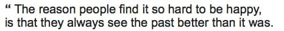

Cdak by Quite and Orange (4k demo)
Очень хорошо.
Очень хорошо.

@через ffffound
Класс!!!

@через ffffound

Прусь от этих часов

Отличный альбом!
Cервис, который добавляет в контекстное меню Finder'а пункт "Move/Copy to DropBox" и копирует линк на этот файл в клипбоард.
Записано одним махом (29 дублей). @через дети